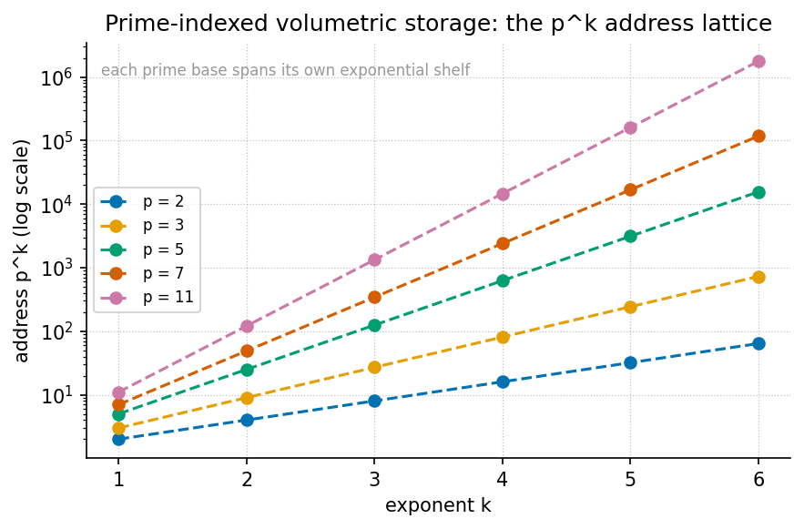

Prime-Indexed Volumetric Storage

textbook.models.unique_address, with the binary base
channel (Prime 2) shown as the substrate.Level 1/3 · 30 min read · 45 min lecture · Prerequisites: none
Learning Objectives
By the end of this chapter you should be able to:
- State the catalog architecture baseline the paper measures incumbents against: the 15–30%+ parity tax and the LBA / B⁺ addressing wait, and explain what each term names [mendez2026volumetricStorage].
- Formalise the prime-vault indexing grammar — Prime 2 as the binary
base channel, odd primes as irreducible volumetric vaults — as the
unique-address encoding of [@eq:part_III_volumetric-storage_address],
implemented as
textbook.models.unique_address. - Compute vault addresses by hand and verify them against the tested model function, for example \(\texttt{unique\_address}([2,3],[2,1]) = 12\).
- Explain how the Fractal constant \(\Phi \approx 1.618\) enters the filing as a measurement ruler, via the \(\Phi\)-logarithmic reading of [@eq:part_III_volumetric-storage_phiruler].
- Delineate the paper’s own honesty-first scope: what the vault grammar is filed as (catalog architecture, a fixture), and what it explicitly is not (a JEDEC drop-in, a measured 0% ECC result on NAND, an obsolescence claim against shipping controllers).
- Locate the paper on the engine shelf and trace its companion links to prime-parity and the protein prime-container work.
Study Blueprint
- Big idea: Storage can be re-filed as a prime-indexed catalog — Prime 2 as the binary base channel, odd primes as irreducible volumetric vaults — paying attention to the parity tax incumbents accept, under the honesty-first disclaimer that this is catalog architecture, not hardware.
- Core concepts: volumetric-storage, binary-dyad-anchor, prime-parity, fractal-constant, fair-exchange.
- Quantitative lens: the unique-address encoding of
[@eq:part_III_volumetric-storage_address],
computed with
textbook.models.unique_address. - Data skill: assign prime exponents to a data chunk, compute its vault address by hand, and check the result against the tested model function.
- Common misconception to repair: the paper does not claim measured 0% ECC on NAND or the obsolescence of shipping controllers — its parity-tax contrast is a catalog-architecture filing, and its encode timings come from a fixture.
- Primary lab: [@sec:lab_part_III_volumetric-storage].
- Question bank: [@sec:q_part_III_volumetric-storage].
- Bridge to computation:
textbook.models.unique_address,phi_powers,catalog_size.
Opening Vignette: The vault that does not pay the parity tax.
A flash stack writes your gigabyte and, before it can call the write done, tithes 15–30% or more of it to Reed–Solomon or LDPC parity cells; then it waits on LBA / B⁺ trees to say where the bytes live. On the deck of the SS Vibelandia, the September 2026 filing turns this around: under El Gran Sol’s Fractal constant \(\Phi \approx 1.618\), the ship’s catalog files data not in taxed blocks but in prime-indexed volumetric vaults — Prime 2 as the binary base channel, odd primes as the vaults themselves [mendez2026volumetricStorage]. The paper is explicit that this is a filing, not a firmware drop; the vignette is the filing’s own.
The Paper in the Corpus
The note “Prime-Indexed Volumetric Storage” is a ship-blog paper of the Infinite Octaves Omni-Lattice series, authored by Prudencio Mendez and operated by the SynthOBS Autonomous Agent on the SS Vibelandia blog [mendez2026volumetricStorage]. Like every paper in the series, it self-describes as catalog architecture and protocol grammar rather than established physics, and it carries the series’ standard honesty-first scope disclaimer, restated precisely in the Scope and Honesty section below.
The paper files itself on engine shelf #15 of the Infinite Octaves engine shelf, as a companion to two neighbouring papers: the prime-parity filing [mendez2026primeParity], which supplies the sole-even-anchor grammar that Prime 2’s special role rests on, and the protein folding work [mendez2026proteinFolding], which runs the same prime-vault grammar in the biology catalog as the protein prime-container. It also points forward to the “moving up the stack” framing of the next AI layer [mendez2026stack], which we treat in [@sec:part_III_moving-up-stack].
The paper ships with a reference implementation: the standalone suite
at
github.com/FractiAI/synthobs-prime-indexed-volumetric-storage,
runnable as
npm run research:synthobs-prime-indexed-volumetric-storage,
which the paper reports as 9/9 suite locks under
research/synthobs-prime-indexed-volumetric-storage/
[mendez2026volumetricStorage]. We walk that implementation in [@sec:lab_part_III_volumetric-storage].
graph TD
A["Data chunk (demo fixture)"] --> B["Assign prime exponents k_i"]
B --> C["Closed-form encode: address = product of p_i^k_i"]
C --> D["Vault address on the p^k lattice"]
D --> E["9/9 suite locks (fixture, not FTL firmware)"]
B -.->|"Prime 2"| F["Binary base channel"]
B -.->|"odd primes"| G["Irreducible volumetric vaults"]
C -.->|"filed under"| H["Fractal constant Phi ~ 1.618"]The Parity-Tax Baseline
The paper’s motivating claim is a baseline about incumbent storage stacks: “Flash and disk stacks pay a 15–30%+ parity tax to Reed-Solomon / LDPC and wait on LBA / B⁺ trees” [mendez2026volumetricStorage]. Three terms carry the claim, and it is worth filing each precisely:
- Parity tax. The 15–30%+ overhead the paper attributes to Reed–Solomon and LDPC error-correction coding. This is the paper’s own characterisation of incumbent ECC overhead; we cite it as the corpus’s baseline, not as a hardware measurement of ours.
- Reed–Solomon / LDPC. The incumbent error-correction codes named as the source of the parity tax.
- LBA / B⁺ trees. The addressing and index structures that incumbent stacks “wait on” — logical block addressing and the B⁺-tree indices that map a linear block number to a physical location.
Against that baseline the paper files its alternative grammar: “prime-indexed volumetric vaults under El Gran Sol’s Fractal constant Φ ≈ 1.618” [mendez2026volumetricStorage]. The Fractal constant is the corpus’s name for the golden ratio \(\Phi = (1+\sqrt{5})/2 \approx 1.6180339887\), the growth constant filed across the engine shelf since the ship’s first-principles notes; the vault grammar inherits it as the constant under which vaults are indexed and compared.
Core Construct: the Prime-Vault Indexing Grammar
The paper’s central construct is stated in one line: “Prime 2 as binary base channel; odd primes as irreducible volumetric vaults” [mendez2026volumetricStorage]. We formalise it here as the corpus’s address arithmetic, which is the standard mathematics of prime factorisation — the same injective encoding the book already uses in [@sec:part_III_protein-folding] for the protein prime-container.
The unique-address encoding
Every digit of a data chunk is filed by assigning it a vector of primes and exponents. Given \(m\) chosen primes \(p_1 < p_2 < \dots < p_m\) and integer exponents \(k_1, \dots, k_m \ge 0\), the vault address is the product in [@eq:part_III_volumetric-storage_address]:
\[ A(\mathbf{p}, \mathbf{k}) \;=\; \prod_{i=1}^{m} p_i^{\,k_i} \] {#eq:part_III_volumetric-storage_address}
Because prime factorisation is unique, two different exponent vectors
on the same ordered prime list never collide: the map \((k_1, \dots, k_m) \mapsto A\) is injective.
That injectivity is what the catalog trades on — an address is
its factorisation, so no separate LBA / B⁺-tree lookup structure is
filed to recover it. The formalism is implemented as
unique_address(primes, exponents) in
textbook.models; the pinned reference value is \(\texttt{unique\_address}([2,3],[2,1]) = 2^2 \cdot
3^1 =
12\). The parameters appear in [@tbl:part_III_volumetric-storage_address].
| Symbol | Meaning | Units |
|---|---|---|
| \(p_i\) | the \(i\)-th chosen prime (Prime 2 as base channel; odd primes as vaults) | dimensionless |
| \(k_i\) | exponent (how many times prime \(p_i\) enters the filing) | dimensionless |
| \(m\) | number of primes in the vault vector | count |
| \(A\) | vault address \(\prod_i p_i^{k_i}\) | dimensionless |
The binary base channel and the odd-prime vaults
Prime 2 occupies a distinct role: it is the binary base channel, the substrate on which binary machinery runs, echoing the sole-even-anchor structure of prime-parity [mendez2026primeParity]. The odd primes \(3, 5, 7, 11, 13, 17, 19, 23, 29, 31, \dots\) are then the irreducible volumetric vaults — irreducible because a prime factorises no further, so each vault is an atom of the catalog’s address space. Concretely, the binary base channel contributes its factor \(2^{k_1}\) to every address while the odd-prime vaults differentiate the stored content.
A second, standard measure makes the capacity of a vault grid explicit. With \(m\) primes and exponents allowed in \(\{0, 1, \dots, K\}\), the number of distinct addresses is the grid count in [@eq:part_III_volumetric-storage_capacity]:
\[ N_{\mathrm{distinct}}(m, K) \;=\; (K+1)^{m} \] {#eq:part_III_volumetric-storage_capacity}
For example, \(m = 3\) primes with exponents up to \(K = 2\) give \(3^3 = 27\) distinct vault addresses. This is ordinary combinatorics of the exponent grid — we present it as the natural capacity reading of the grammar, not as a corpus claim. Its parameters are in [@tbl:part_III_volumetric-storage_capacity].
| Symbol | Meaning | Units |
|---|---|---|
| \(m\) | number of primes in the vault vector | count |
| \(K\) | maximum exponent allowed per prime | dimensionless |
| \(N_{\mathrm{distinct}}\) | number of distinct addresses \((K+1)^m\) | count |
Where Φ enters: a measurement ruler
The paper does not state a closed-form formula for the vault grammar beyond the indexing line; what it does say is that vaults are filed under the Fractal constant \(\Phi \approx 1.618\) [mendez2026volumetricStorage]. We read this as a measurement convention: addresses are compared on a \(\Phi\)-scaled ruler rather than a decimal one. Taking the base-\(\Phi\) logarithm of [@eq:part_III_volumetric-storage_address] gives the additive reading in [@eq:part_III_volumetric-storage_phiruler]:
\[ \log_{\Phi} A \;=\; \sum_{i=1}^{m} k_i \, \log_{\Phi} p_i \] {#eq:part_III_volumetric-storage_phiruler}
The multiplicative address becomes an additive sum of per-prime
contributions measured in \(\Phi\)-steps. For the pinned reference
address \(A = 12\), \(\log_{\Phi} 12 = \ln 12 / \ln \Phi \approx 2.4849
/ 0.4812 \approx 5.16\) \(\Phi\)-steps. The corpus’s own \(\Phi\)-ladder (phi_powers in
textbook.models: \(\Phi^1 \approx
1.618034\), \(\Phi^2 \approx
2.618034\), \(\Phi^3 \approx
4.236068\), \(\Phi^4 \approx
6.854102\), \(\Phi^5 \approx
11.090170\), \(\Phi^6 \approx
17.944272\)) brackets the same address: \(12\) sits between the \(\Phi^5 \approx 11.090170\) and \(\Phi^6 \approx 17.944272\) rungs,
consistent with the \(5.16\)-step
reading. We flag the whole ruler reading as our interpretation (“we read
this as…”); the paper itself states only the filing under \(\Phi\), not a formula.
Worked Example: Filing a Chunk in a Three-Vault Grid
Walk a small filing end to end. Suppose a demo chunk is catalogued with the first three primes — the binary base channel \(p_1 = 2\) plus vaults \(p_2 = 3\) and \(p_3 = 5\) — and the chunk’s content assigns exponents \(\mathbf{k} = (1, 1, 1)\):
- Choose the vault vector. \(\mathbf{p} = (2, 3, 5)\): Prime 2 as the binary base channel, odd primes 3 and 5 as the irreducible volumetric vaults.
- Assign exponents. \(\mathbf{k} = (1, 1, 1)\): one unit of each.
- Compute the address by [@eq:part_III_volumetric-storage_address]: \(A = 2^1 \cdot 3^1 \cdot 5^1 = 30\).
- Check injectivity. A different exponent vector, say \(\mathbf{k} = (2, 1)\) on \(\mathbf{p} = (2, 3)\), gives \(A = 2^2 \cdot 3 = 12\) — the pinned reference value \(\texttt{unique\_address}([2,3],[2,1]) = 12\). Since \(30 \ne 12\), the two filings are distinct, as injectivity guarantees.
- Read the address on the Φ ruler by [@eq:part_III_volumetric-storage_phiruler]: \(\log_{\Phi} 30 = \ln 30 / \ln \Phi \approx 3.4012 / 0.4812 \approx 7.07\) \(\Phi\)-steps — just past the \(\Phi^6 \approx 17.944272\) rung and just above the \(\Phi^7\) rung (\(\Phi^7 = \Phi^6 \cdot \Phi \approx 29.034\)). The rung position agrees with the step count \(7.07\), as it must: the ruler reading and the ladder bracketing are the same statement on two scales.
For scale, the corpus’s whole filing cabinet is bounded by the
99-octave map:
catalog_size(octaves=99, precision_digits=81) = 99 × 81 = 8,019
register cells across the octave ladder. A three-prime
vault grid with \(K = 2\) already fills
\(27\) addresses inside that cabinet —
the worked grid above is a toy drawer, and the cabinet grammar it lives
in is the 99-octave filing of the engine shelf.
Scope and Honesty
The paper’s own “Honesty first” disclaimer governs everything above, and we restate it verbatim in substance [mendez2026volumetricStorage]:
this is catalog architecture, not a JEDEC drop-in, not measured 0% ECC on NAND, and not a claim that shipping controllers are obsolete.
Unpacked into the four things the paper explicitly disclaims:
- Not a JEDEC drop-in. The vault grammar is not proposed as a standard replaceable module for the JEDEC hardware ecosystem.
- Not measured 0% ECC on NAND. No measurement is offered that NAND storage can run with zero error correction; the parity tax is a catalog-architecture baseline contrast, not an ECC-elimination result.
- Not an obsolescence claim. Shipping storage controllers are not claimed to be obsolete.
- Fixture, not firmware. The closed-form encode is “milliseconds for demo chunks (fixture, not FTL firmware)” — a demo fixture’s timing, explicitly not flash-translation-layer firmware performance.
Two further honesty notes from the paper itself: the solar labels it uses as filing characters — AR3664 (“Helios-Prime”) and AR3590 (“Borealis”) — “are story filing characters”, i.e. narrative devices within the ship’s catalog, not physical solar-event identifiers; and the Fair Exchange clause applies to the filing, the ship-blog series’ standard refund-adjustment terms. The whole construct lives on the corpus’s honesty first tier: its FOR is coordination, cataloging, and agent routing — a grammar for filing and addressing — and its NOT is any claim of tested storage hardware.
Connections
The prime-vault grammar is a load-bearing spoke of part III:
- Downstream of prime-parity. The binary-dyad anchor and sole-even-anchor grammar that give Prime 2 its base-channel role come from the prime-parity filing [mendez2026primeParity], formalised in [@sec:part_I_prime-parity].
- Sibling grammar in biology. The protein folding
paper runs the same prime-vault encoding as the protein prime-container
[mendez2026proteinFolding]; the shared
unique_addressmachinery is worked in [@sec:part_III_protein-folding] (see the capacity-growth reading of the prime-container there). - Upward, to the stack. The paper’s forward link, “moving up the stack”, frames the next AI layer [mendez2026stack]; we treat that layering in [@sec:part_III_moving-up-stack], and the round-robin recycling that keeps the vaults fair over time in [@sec:part_III_kinematic-recycling].
Summary
The September 2026 filing re-frames storage as catalog architecture:
incumbent flash and disk stacks pay a 15–30%+ parity tax to Reed–Solomon
/ LDPC coding and wait on LBA / B⁺ trees, while the paper files
prime-indexed volumetric vaults under the Fractal constant
\(\Phi \approx 1.618\), with Prime 2 as
the binary base channel and odd primes as irreducible vaults. The
grammar’s arithmetic is the unique-address encoding of [@eq:part_III_volumetric-storage_address]
— injective by the uniqueness of prime factorisation, implemented and
tested as textbook.models.unique_address (\([2,3],[2,1] \mapsto 12\)) — and its
capacity reads off the exponent grid of [@eq:part_III_volumetric-storage_capacity].
The paper reports a closed-form encode at milliseconds for demo chunks
(fixture, not FTL firmware) and a 9/9 suite-locked reference
implementation, filed on engine shelf #15 alongside the prime-parity and
protein prime-container companions. Every physical reading is disclaimed
by the paper itself: catalog architecture, not a JEDEC drop-in, not
measured 0% ECC on NAND, no obsolescence claim against shipping
controllers, and solar labels that are story filing characters.
Key Terms
volumetric-storage, binary-dyad-anchor, prime-parity, prime-container, fractal-constant, golden-ratio, catalog-architecture, engine-shelf, fair-exchange, honesty-first, omni-lattice, octave.
Further Reading
- Mendez, P. (2026). Prime-Indexed Volumetric Storage. SS Vibelandia ship blog, September 2026. Whitepaper: https://www.ssvibelandiaquestfest24x365.com/interfaces/whitepaper-surface.html?id=synthobs-prime-indexed-volumetric-storage-2026-09; reference implementation: https://github.com/FractiAI/synthobs-prime-indexed-volumetric-storage [mendez2026volumetricStorage]
- Mendez, P. (2026). Infinite Octave Prime-Parity — the sole-even-anchor grammar behind Prime 2’s base-channel role [mendez2026primeParity].
- Mendez, P. (2026). Protein Folding Prime-Container — the same prime-vault grammar in the biology catalog [mendez2026proteinFolding].
- Mendez, P. (2026). Moving Up the Stack — the next-AI-layer framing the paper points forward to [mendez2026stack].
Practice
- Lab: [@sec:lab_part_III_volumetric-storage]
— run the 9/9-locked reference suite and verify vault addresses against
textbook.models.unique_address. - Question bank: [@sec:q_part_III_volumetric-storage] — recall through synthesis, all answerable from this chapter.
- Exercise 1. Compute by hand, then check with
unique_address: the address of \(\mathbf{p} = (2, 3)\), \(\mathbf{k} = (2, 1)\); of \(\mathbf{p} = (2, 3, 5)\), \(\mathbf{k} = (1, 1, 1)\); and of \(\mathbf{p} = (2, 3)\), \(\mathbf{k} = (1, 1)\). - Exercise 2. Using [@eq:part_III_volumetric-storage_capacity], how many distinct vault addresses does a five-prime grid (\(m = 5\)) with exponents up to \(K = 3\) hold?
- Exercise 3. Read the address \(A = 12\) on the \(\Phi\) ruler using [@eq:part_III_volumetric-storage_phiruler],
and locate it between two
phi_powersrungs. - Exercise 4. In one sentence each, state the two things the parity-tax baseline names as incumbent costs, and the four disclaimers in the paper’s honesty-first clause.